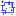
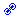

Table of Contents
Barra d'objectes

La barra d'objectes està situada horitzontalment just damunt del mapa, sota de la barra principal. Conté icones que estan relacionades amb la presentació de tota classe d'objectes en el mapa.
Grup d'objectes A
 Mostra els estels drecera per a Carta → Mostra els objectes → Mostra els estels.
Mostra els estels drecera per a Carta → Mostra els objectes → Mostra els estels.- Mostra els objectes de cel profund drecera per a Carta → Mostra els objectes → Mostra els objectes de cel profund.
- Mostra les línies drecera per a Carta → Mostra els objectes → Mostra les línies.
- Mostra les imatges drecera per a Carta → Mostra els objectes → Mostra les imatges.

Grup d'imatges
 Obté imatge DSS La descarrega des de la web DSS. És una drecera per Carta →Obté imatge DSS.
Obté imatge DSS La descarrega des de la web DSS. És una drecera per Carta →Obté imatge DSS.- Configura la presentació d'imatges drecera per a Configuració > Imatges.
 Imatge parpellejant és una drecera per a Veure → Imatge parpellejant
Imatge parpellejant és una drecera per a Veure → Imatge parpellejant


Grup d'objectes B
 Mostra els planetes drecera per Carta → Mostra els objectes → Mostra els planetes.
Mostra els planetes drecera per Carta → Mostra els objectes → Mostra els planetes. Mostra les asteroides drecera per a Carta → Mostra els objectes → Mostra els asteroides.
Mostra les asteroides drecera per a Carta → Mostra els objectes → Mostra els asteroides. Mostra el cometes drecera per a Carta → Mostra els objectes → Mostra els cometes.
Mostra el cometes drecera per a Carta → Mostra els objectes → Mostra els cometes.- Mostra la Via Làctia drecera per a Carta → Mostra els objectes → Mostra la Via Làctia.


Grup línies/graelles
- Mostra la graella de coordenades drecera per a Carta → Línies/Graelles → Mostra la graella de coordenades (la triada en el menú de la configuració.
- Afegeix la graella equatorial drecera per a Carta → Línies/Graelles → Afegeix la graella equatorial.
- Mostra les figures de les constel·lacions drecera per a Carta → Línies/Graelles → Mostra les figures de les constel·lacions.
-  Mostra els límits de les constel·lacions drecera per a Carta → Línies/Graelles → Mostra els límits de les constel·lacions.
- Mostra l'equador galàctic drecera per a Carta → Línies/Graelles → Mostra l'equador galàctic.
- Mostra l'eclíptica drecera per a Carta → Línies/Graelles → Mostra l'eclíptica.
Grup marques
 Mostra les marques del buscador drecera per a Carta → Línies/Graelles → Mostra les marques del buscador.
Mostra les marques del buscador drecera per a Carta → Línies/Graelles → Mostra les marques del buscador. Mostra les etiquetes drecera per a Carta → Mostra les etiquetes.
Mostra les etiquetes drecera per a Carta → Mostra les etiquetes. Modifica les etiquetes seleccioneu el mode “Modifica les etiquetes” activant-lo o desactivant-lo. Si l'heu activat podeu fer clic amb el botó dret del ratolí sobre una etiqueta i s'obrirà un submenú per modificar-la. És una drecera per Edició → Modifica les etiquetes.
Modifica les etiquetes seleccioneu el mode “Modifica les etiquetes” activant-lo o desactivant-lo. Si l'heu activat podeu fer clic amb el botó dret del ratolí sobre una etiqueta i s'obrirà un submenú per modificar-la. És una drecera per Edició → Modifica les etiquetes. Mostra els objectes sota l'horitzó drecera per a Carta → Veure sota de l'horitzó.
Mostra els objectes sota l'horitzó drecera per a Carta → Veure sota de l'horitzó. Color del cel drecera per a Configuració → Presentació → Color del cel → Color del cel.
Color del cel drecera per a Configuració → Presentació → Color del cel → Color del cel.


{kind=link}
{kind=link}
{kind=link}
{kind=link}
{kind=link}
{kind=link}
{kind=link}
{kind=link}
{kind=link}
{kind=link}
{kind=link}
{kind=link}
Grup Enllaç/Bloqueig
-  Enllaça totes les cartes Si està activat, tots els mapes oberts mostraran el mateix objecte, encara que les respectives configuracions siguin diferents. Si un mapa es mou, els altres també es mouran conseqüentment. És una drecera per a Finestres → Enllaça totes les cartes.
{kind=link}
* Bloqueja sobre … Si s'activa, l'objecte seleccionat serà desplaçat al centre del mapa i hi romandrà fix. És una drecera per a Finestres → Bloqueja sobre....
{kind=link}
Mode de presentació dels estels i els objectes de cel profund
- Modifica el mode de dibuix aquesta eina permuta entre els tres modes de mostrar els estels: “mode línia” “fotogràfic” i “paramètric”. Els objectes de cel profund es dibuixen en mode línia quan els estels també hi estan. Altrament es mostren en “Mode gràfic”. Vegeu Configuració → Presentació.
{kind=link}